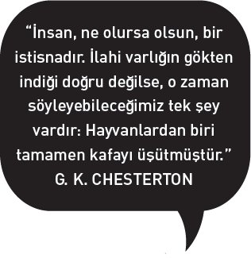
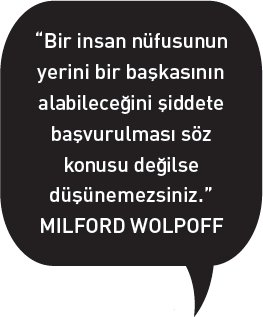

Fransız ressam ve yazar (hakkında aktarılanların çoğuna göre deli, kötü ve tanıması tehlikeli) Paul Gauguin Darwin ile diğer Victoria dönemi bilim insanlarının neden olduğu kozmolojik bir baş dönmesinden mustaripti hep.
Gauguin 1890'larda Paris'ten, ailesinden ve işi borsa simsarlığından kaçıp tropiklerde yerli kızların resimlerini yapmaya (ve onlarla yatmaya) gitti. Istıraplarla kıvranan ruhların birçoğu gibi, içkinin ve afyonun yardımıyla kendisinden kaçmaya büyük çaba harcamış olmasına rağmen o da bunu kolayca yapamadı. Huzursuzluğunun derinlerinde, "vahşi" dediği şeyi, ilksel adamı (ve kadını), ham haliyle insanlığı, türümüzün kolay kolay ele geçmez özünü bulma özlemi yatıyordu. İşte bu arayış onu insan eli değmemiş bir dünyanın (onun gözünde yıkılmamış bir dünyanın) izlerinin, haç ve üç renkli bayrağın altında varlığını sürdüğü Tahiti'ye ve Güney Denizi'ndeki başka adalara sürüklemişti.
1897'de buharlı bir posta gemisi Tahiti'ye demir attı, kötü haberler getiriyordu. Gauguin'in en gözde çocuğu Aline zatürreeden ansızın ölüp gitmişti. Gauguin aylar süren hastalıklar, yoksulluk ve intihar düşünceleriyle dolu bir ümitsizliğin ardından acısını damıtıp devasa bir tablo ortaya çıkardı (aslında düşünülüşü itibarıyla bir tuvalden çok bir duvar resmiydi)[1], bu tablosunda tıpkı Victoria çağı gibi o da varoluş muammasına yeni cevaplar verilmesini istiyordu. Tablonun üzerine başlığı koyu harflerle yazmıştı; çocuksu, yalın ama derin üç soru: D'Oû Venons Nous? Que Sommes Nous? Oû Allon Nous? (Nereden Geliyoruz? Neyiz? Nereye Gidiyoruz?)
Bu eser, vahşi Tahiti'nin ağaçlıkları ya da düzensiz bir Cennet Bahçesi olabilecek bir manzaranın ortasında bilmecemsi figürlerin kaynaştığı bir panorama sunuyordu: İbadet edenler ya da tanrılar; kediler, kuşlar ve dinlenmekte olan bir keçi; kaldırdığı elleriyle öteleri işaret ediyormuş gibi görünen, sakin bir ifadesi olan büyük bir idol; ortada yer alan, meyve koparan bir figür; Gauguin'in bu eserindeki diğer kadınlar gibi şehvetli bir masum olmayıp Perulu bir annenin ilham ettiği, baktığı yeri delip geçen gözüyle kurumuş gitmiş bir acuzeye benzeyen bir Havva, insanlığın anası ve ressamın yazdığına göre "kaderlerini düşünme cüretinde bulunmuş"[2] genç bir çifte dönmüş, hayretle bakmakta olan bir başka figür.
Elinizdeki kitapta ele almak istediğim şey Gauguin'in üçüncü sorusu: "Nereye gidiyoruz?" Cevapsız bir soru gibi görünebilir bu. Zaman içinde insanın nasıl bir yol izleyeceğini kim söyleyebilir ki? Ama sanırım önceki iki soruyu cevaplayarak bunu da kalın fırça darbeleriyle cevaplayabiliriz. Ne olduğumuzu, neler yaptığımızı açıkça görürsek birçok devirde, birçok kültürde ısrarla varlığını sürdüren insan davranışlarını tanıyabiliriz. Bunu bilmek de bize yapmamızın muhtemel olduğu şeyi, buradan muhtemelen nereye gideceğimizi söyleyecektir.
Kendisinden önceki medeniyetlerin çoğunu kapsayan medeniyetimiz, istim salmış, geleceğe doğru hızla ilerleyen kocaman bir gemidir. Hiç olmadığı kadar hızlı, daha ileriye, daha yüklü bir halde ilerliyor. Her kayalığı, her tehlikeyi göremeyebiliriz, ama gemimizin pusulasını ve aldığımız yolu okuyarak, gemimizin tasarımını, güvenlik sicilini, mürettebatın becerilerini anlayarak, sanıyorum, ilerde bizi bekleyen dar boğazlardan, buzdağları arasından geçmenin akıllıca bir yolunu bulabiliriz.
Bunu hiç ertelemeksizin yapmamız gerektiğine inanıyorum, çünkü arkamızda bıraktığımız çok fazla gemi enkazı var. Güvertesinde olduğumuz gemi gelmiş geçmiş en büyük gemi değil yalnızca, geriye kalan tek gemi bu aynı zamanda. Zekâmızın gelişmesinden bu yana başardığımız her şeyin geleceği, gelecek birkaç yıl içindeki eylemlerimizin bilgeliğine dayanacak. Bütün yaratıklar gibi insanlar da şimdiye kadar yollarını deneme yanılma yoluyla bulmuşlardır, ama başka yaratıkların tersine bizim öyle büyük bir varlığımız var ki hata yapmak artık kaldıramayacağımız bir lüks. Dünya, büyük hatalarımızı affetmeyecek kadar küçüldü artık.
YİRMİNCİ YÜZYILDAKİ bazı olaylara rağmen Batı kültür geleneğinden çoğu insan hâlâ Victoria döneminin ilerleme idealine inanıyor, tarihçi Sydney Pollard'ın 1968'de özlü bir biçimde "İnsanlık tarihinde bir değişiklik örüntüsünün var olduğu... insanlık tarihinin yalnızca tek bir yönde geri çevrilemez değişikliklerden oluştuğu, bu yönün de ilerlemeye doğru olduğu varsayımı," diye tanımladığı bir inanç bu.[3] Yeryüzünde böyle bir düşünce çerçevesi oluşturabilecek yaratıkların ortaya çıkması, ilerlemenin bir doğa kanunu olduğunu düşündürüyor: Memeli sürüngenden daha hızlıdır, maymun öküzden daha zekidir, insan da hepimizin en zekisidir. Teknolojik kültürümüz insanın ilerlemesini teknolojiyle ölçüyor: Yumruktan iyisi sopadır, sopadan iyisi oktur, oktan iyisi kurşundur. Bu inanca ampirik gerekçelerle, bunlar işe yaradığı için geldik.
Pollard, maddi ilerleme fikrinin çok kısa bir süre önce ortaya çıkmış ("yaklaşık olarak ancak son üç yüz yıl içinde önemli olmuş")[4]; bilimin ve sanayinin yükselmesi ve buna karşılık geleneksel inançların gerilemesiyle aynı dönemde varlık göstermiş bir fikir olduğuna dikkat çekiyor.[5] Ahlaki ilerlemeye (önceki devirlerin başlıca kaygılarından birine) onun maddi ilerlemeyle el ele yürüdüğünü varsaymak dışında artık pek kafa yormuyoruz. Medeni insanların barbarlardan, yani vahşilerden daha iyi kokmakla kalmayıp daha iyi davrandıklarını düşünmeye meylediyoruz. Bu kavrayış tarihin mahkemesinde sorunludur, sonraki bölümde "medeniyet"in ne anlama geldiğini değerlendirirken buna döneceğim.
İlerlemeye duyduğumuz pratik inanç kemikleşip sertleşerek bir ideolojiye, tıpkı ilerlemenin kendisinin meydan okuduğu dinler gibi, itimatnamesindeki bazı kusurları görmeyen seküler bir dine dönüşmüştür. Dolayısıyla ilerleme antropolojik anlamda bir "mit" haline gelmiştir. Bunu söylerken, ilerlemenin inandırıcılıktan uzak olduğunu ya da gerçekdışı olduğunu kastetmiyorum. Başarılı mitler genellikle güçlü, genellikle de kısmen doğrudurlar. Bir yerde şöyle yazmıştım: "Mit, ister gerçek ister hayali olsun, geçmişin, bir kültürün en derin değerlerini ve özlemlerini güçlendirecek kalıplar halinde düzenlenmesidir... Mitler o kadar anlam yüklüdürler ki onlarla yaşar, onlarla ölürüz. Kültürlerin zaman içinde yollarını çizerken dayandıkları haritalardır onlar."[6]
İlerleme miti kimi zaman bize (ama en iyi masalarda oturanlarımıza) iyi hizmet etti, bunu sürdürebilir de. Ne var ki bu kitapta bu mitin aynı zamanda tehlikeli bir hal aldığını savunacağım. İlerlemenin, aklın ötesine geçip felakete götüren bir iç mantığı vardır. Baştan çıkarıcı bir başarılar zinciri bir tuzakla son bulabilir.
Silahları ele alalım söz gelimi. Çinlilerin barutu icat etmesinden bu yana, patlama yaratma konusunda büyük bir ilerleme oldu: kestanefişeğinden topa, kale duvarı ve kapısı patlatmakta kullanılan silahlardan (petard) ileri düzeyde patlayıcı top mermisine kadar. İleri düzey patlayıcılar bir mükemmellik seviyesine eriştiklerinde de ilerleme, atomda sonsuz büyüklükteki patlamayı buldu. Ama yaratabileceğimiz patlama dünyamızı havaya uçurabilecek olduğundan biraz fazla ileri gitmiş olduk.
Atom bombasını yaratan bilim insanlarının birkaçı 1940'larda bunun farkına varmışlardı, siyasetçilere ve başkalarına yeni silahların ortadan kaldırılması gerektiğini söylüyorlardı. Albert Einstein "Atomun gücünün serbest bırakılması düşünme biçimlerimiz dışında her şeyi değiştirdi," diye yazmıştı, "o yüzden de eşi menendi olmayan felaketlere doğru sürükleniyoruz." Başkan Kennedy ondan birkaç yıl sonra "İnsanlık savaşa bir son vermezse savaş insanlığa son verecek," diyordu.
1950'lerde ben çocukken, silahlarda çok fazla ilerlemenin (Hiroşima, Nagazaki ve buharlaşıp uçmuş Pasifik Adaları'nın) gölgesi dünyamızın üzerine çoktan çökmüştü. Bugün artık altmış yıldır hayatımızı karartıyor, bu konu hakkında o kadar çok şey söylendi ki bir şeyler daha eklememe hiç gerek yok. Burada vurgulamak istediğim nokta şu: Silah teknolojisi, insanın ilerlemesinin, üzerinde geliştiği gezegeni yok etme tehdidi yaratarak bir çıkmaza girdiği ilk alandı yalnızca.
Amerika'da geçen yüzyılın Soğuk Savaşçıları "Sovyetler'i bombalayıp Taş Devri'ne geri döndürme" tehdidine başvururlardı. Nükleer bir "takas" (bu örtmecenin ilerlediği üzere) bütün yüksek hayat biçimlerine son vermese bile, dünya çapında medeniyete son verecekti. Nükleer bir kışta yenebilecek bir ürün yetişmeyecekti.
O dönemlerde bu ilerleme tuzağı bir sapma olarak görülüyordu. Nükleer enerji ve kimyasal böcek ilaçları da dahil diğer bütün alanlarda, ilerlemeye duyulan inanç büyük ölçüde sarsılmamıştı. 1950'lerdeki reklamlarda, doğru marka elektrikli süpürgeyi almış olduğundan geleceğin tadını önceden çıkardığı için gülümseyen bir "1970 Hanım" görülüyordu. Her yıl otomobiller önceki yılın otomobilinden farklı görünüyordu (özellikle de aralarında bir fark yoksa). "Daha büyük! Daha geniş! Daha uzun!" diye şarkılar söylüyordu bir reklam müziğinde kızlar, otomobil yapımcıları bugün olduğu gibi o gün de daha büyüğü daha iyi diye satmaya teşneydi. Üçüncü Dünya olarak bilinen yerde, Batılı olmayan kültürlerin süper güçler arasında parçalanmış bir "gerilik" kalıntısı olarak görüldüğü o çözülmemiş dokuda cömertçe saçılan DDT tozu yüzünden köylüler haşarattan, parazitlerden kurtuluyordu.
Sovyetler Birliği'nin çökmesi, birçoklarının gerçekten de nihayetinde ilerlemenin bir tek yolu olduğu kanısına varmasına yol açtı. Eskiden ABD Dışişleri Bakanlığı'nda çalışan Francis Fukuyama 1992'de kapitalizm ve demokrasinin tarihin "sonu" olduğunu, tarihin yalnızca izlediği yön değil aynı zamanda hedefi olduğunu ilan etti.[7] Bundan kuşkulananlar kapitalizm ile demokrasinin ille de can ciğer kuzu sarması olmadığına işaret ettiler, Nazi Almanyası'nı, modern Çin'i, dünyanın her yerini kaplamış, çok az ücrete uzun saatler boyunca çalışılan işlik tiranlığı takımadalarını örnek gösterdiler. Yine de Fukuyama'nın naif zafer şarkısı özellikle siyasal sağda, ileriye doğru yolu seçmemiş olanlara kendi iyilikleri için, gerekiyorsa zor kullanarak bu seçimin yaptırılması gerektiği inancını güçlendirdi. Bu bakımdan ve üstünü örttüğü öz çıkarlar yüzünden bugünün ilerleme ideolojisi ister yedinci yüzyıldaki İslam İmparatorluğu olsun ister on altıncı yüzyıl İspanyol ya da on dokuzuncu yüzyıl Britanya İmparatorluğu olsun eski imparatorlukların misyonerlik projelerini andırıyor.
SOĞUK SAVAŞ'IN SON BULMASINDAN BU YANA, nükleer cinini bir kenarda tuttuk ama onu şişesine geri sokmaya başlamadık. Gelgelelim iyi aygıtlar olacaklarını umduğumuz, ama sonuçlarını henüz öngöremediğimiz başka güçleri (sibernetik, biyoteknoloji, nanoteknoloji) serbest bırakmakla meşgulüz.
Gelgelelim en açık, en yakın tehdit kendi kendimizin mahvolmasından daha görkemli bir şey olmayabilir. Teknolojiyle ilgili sorunların çoğunda olduğu gibi, kirlilik bir ölçek meselesidir. Biyosfer, pis eski dostlarımız kömür ve petrolü yavaş yavaş yakmış olsaydık, onları tolere edebilirdi. Peki ama biyosfer, bu gezegenin karanlık tarafının uzayın karanlığında körüklenmiş bir kor gibi ışıldamasına yol açacak kadar çılgın bir tüketim furyasına daha ne kadar dayanabilir?
Alexander Pope, biraz züppe bir tavırla az şey öğrenmenin tehlikeli bir şey olduğunu söylemişti; Thomas Huxley de daha sonra şöyle bir soru yöneltmişti: "Tehlikeden uzak olacak kadar çok şeye sahip olan insan nerede?"[8] Teknoloji bağımlılık yaratır. Maddi ilerleme yalnızca daha fazla ilerleyerek çözülebilecek (ya da çözülebilecekmiş gibi görünen) sorunlar ortaya çıkarır. Burada da yine şeytan ölçekte gizlidir: İyi bir patlama işe yarayabilir, daha iyi bir patlamaysa dünyanın sonunu getirebilir.
Buraya kadar bu gibi sorunlardan sanki sanayi teknolojilerinden doğmuş, tam anlamıyla modern sorunlarmış gibi bahsettim. Dünyayı yıkacak kadar güçlü bir ilerleme gerçekten modern olsa da yararları tuzağa dönüştüren ölçek şeytanı Taş Devri'nden beri bizimle. Bu şeytan bizim içimizde yatıyor ve ne zaman doğaya doğru yürüyüşe geçsek başını çıkartıveriyor, akıllılık ile düşüncesizlik, ihtiyaç ile açgözlülük arasındaki dengeyi bozuveriyor.
Bir yerine iki mamut öldürmeyi öğrenen paleolitik dönem avcıları ilerleme kaydetmişlerdi. 200 mamut birden öldürmeyi öğrenenlerse (bir sürüyü bir yardan aşağı doğru sürenler) fazla ileriye gitmişlerdi. Bir süre bolluk içinde yaşadıktan sonra, açlıktan ölüp gittiler.
Yeryüzündeki çölleri ve ormanları süsleyen o muhteşem harabelerin birçoğu, ilerleme tuzaklarının abideleri, kendi başarılarının kurbanı olan medeniyetlerin mezartaşlarıdır. Bir zamanlar kudretli, karmaşık ve görkemli olan bu gibi toplumların akıbetleri, bizim toplumumuz için en öğretici dersleri sunar. Harabeleri, ilerlemenin tehlikelerini işaret eden gemi enkazlarıdır. Daha modern bir benzetmeyle söylersek o harabeler düşmüş uçaklardır, neyin yanlış gittiğini bize karakutuları söyleyecektir. Bu kitapta uçuş planı, mürettebat seçimi ve tasarımla ilgili geçmiş hataları tekrarlamaktan kaçınabileceğimiz umuduyla bu karakutulardan bazılarını okumak istiyorum. Elbette ki bizim medeniyetimizin kendine özgü yönleri, önceki medeniyetlerin kendilerine özgü özelliklerinden farklı. Ama düşünmeyi istediğimiz kadar değil. Geçmişte olsun şimdide olsun bütün kültürler dinamiktir. En yavaş hareket edenler bile uzun vadede ilerleme kaydeder. Her örnekte olgular birbirinden farklı olsa da zaman içindeki kalıplar insanı telaşlandıracak (ve cesaretlendirecek) kadar benzerdir. Hatalarımızın öngörülebilirliği yüzünden telaşlanmamız gerekiyor, ama bu durum, hatalarımızın, bugün neyle yüz yüze olduğumuzu anlamamıza yaramalarını sağlayacağı için cesaretlenmemiz de gerek.
Gauguin gibi bizler de genellikle uzakta kalmış geçmişin masum ve bozulmamış olduğunu, cennetten düşmeden önce rahatlık ve bolluk içinde yaşanılan bir devir olduğunu düşünmeyi tercih ediyoruz. "İdil" ve "Cennet" kelimeleri antropolojiyle ilgili popüler kitapların başlıklarında sık sık boy gösterir. Bazılarına göre "Cennet" tarım öncesi dünyadır, avcılık ve toplayıcılık çağıdır; bazılarına göreyse Kolomb öncesi dünyadır, beyaz adamın gelmesi öncesindeki Amerika kıtalarıdır; birçoklarına göreyse sanayi öncesi dünyadır, makineler öncesindeki uzun sükûnet dönemidir. Elbette ki hayatta olmanın iyi olduğu devirler de olmuştur, kötü olduğu devirler de. Ama hakikat insanların kendilerini Cennet'in dışına sürdüğü, kendi yuvalarını bozarak bunu tekrar tekrar yaptıklarıdır. Dünya üzerindeki bir cennette yaşamak istiyorsak onu şekillendirmek, paylaşmak, korumak bize kalmıştır.
GAUGUIN İLK SORUSUNA (Nereden geliyoruz?) kafa yorarken "İnsan, ne olursa olsun bir istisnadır... İlahi bir varlığın gökten indiği doğru değilse, o zaman söyleyebileceğimiz tek şey vardır: Hayvanlardan biri tamamen kafayı üşütmüştür," diyen G. K. Chesterton'la aynı fikirde olabilirdi.[9] Artık bir maymunun kafayı üşüttüğü beş milyon yıllık süreç hakkında daha fazla şey biliyoruz, o yüzden de evrim kuramının açılımları ilk kez açıklık kazandığında dünyanın her tarafında hissedilen şoku bugün yeniden yakalamak çok güç.
Shakespeare 1600'de Hamlet'i yazarken "İnsan nasıl bir şaheser! Aklı ne kadar soylu! Melekeleri ne kadar sonsuz! Hareketleri nasıl da melek gibi! Kavrayışı nasıl da bir tanrı misali!" demişti.[10] İzleyicileri Hamlet'in insan doğası karşısındaki hayret, horgörü ve ironi karışımı hislerini paylaşmışlardır herhalde. Ama pek azı Kitab-ı Mukaddes'te denildiği gibi yaratıldıklarından kuşkulanmıştır: "Ve Tanrı dedi ki: 'İnsanı kendi suretimizde, bize benzer yaratalım.' "
O izleyiciler cinsiyet, ırk ve rengin neden olduğu pürüzleri görmezden gelmeye hazırlardı. Tanrı siyah mıydı yoksa sarışın mı? Göbeği var mıydı? Peki ya diğer fiziksel özellikleri nelerdi? Bu gibi şeyleri çok ince düşünmeye gelmezdi. Bugün artık çok aşikâr görünen maymunlarla akrabalığımız hakkında akla soru gelmiyordu, maymunlar insanların kuzenleri ya da olası ataları olarak değil parodileri olarak görülüyorlardı (tabii eğer görülüyorlarsa, o zamanlar Avrupa'da maymuna çok az rastlanırdı).
1600'deki insanların çoğu bir düşünecek olsalar, bizim bugün bilimsel yöntem dediğimiz şeyin, İlahi Kudret'in kurduğu büyük saati açıp aydınlatmak olduğuna inanırlardı. Tanrı zaten insanların, eserine hayranlıkla ortak olmalarına izin vermişti. Galileo'nun göklerin yapısı hakkındaki ıstırap verici düşünceleri patlamamış bir bombaydı, kanıtlanmamış, özümsenmemişti. (Hamlet hâlâ Kopernik öncesi bir evrene hitap ediyor, "yukarıda asılan görkemli semadan" bahsediyordu.) Kutsal Kitap'a duyulan inanç ile ampirik kanıtlar arasında kaçınılmaz bir çarpışma olacağı pek tahmin edilmiyordu. Gerçekten büyük sürprizlerin çoğu (dünyanın yaşı, hayvanların ve insanın kökeni, göğün şekli ve ölçeği) daha ileriki tarihleri bekliyordu. 1600'deki insanların çoğu doğa filozoflarından çok rahipler ve cadılar yüzünden telaşa düşüyordu, gerçi o zamanlar bu üçü arasındaki sınırlar genellikle belirsizdi.
Kutsal Kitap'taki insan tanımından ve bir insanı tanımak için gereken sağduyu ilkesinden hareketle Hamlet insanoğlunun ne olduğunu bildiğini düşünür; Batılıların çoğu da bir 200 daha ne olduklarını bildiklerini düşünmeyi sürdürdüler. Akılcı kuşku, başlangıcımızın nasıl olduğu meselesinin üzerine ancak on dokuzuncu yüzyılda, jeologların Kutsal Kitap'taki kronolojinin onların kayalarda, fosillerde, çökeltilerde okuduğu antik devirleri açıklayamayacağını fark etmeleriyle birlikte çöktü. Bazı medeniyetler, en başta da Maya ve Hindu medeniyetleri, zamanın engin ya da sonsuz olduğunu varsayıyorlardı, ama bizim hep zamanın ölçeğiyle ilgili küçük bir kavrayışımız olmuştur. As You Like It'te Rosalind "Zavallı dünya neredeyse altı bin yaşında" diye iç geçirir,[11] Eski Ahit'teki ataların hayatlarından, "soyları"ndan ve başka ipuçlarından çıkarılmış genel bir tahmindi bu. Rosalind'in iç çekişinden yarım yüzyıl sonra Piskopos Armaghlı Ussher ve onunla aynı devirde yaşamış John Lightfoot Yaratılış'ın kesin tarihini belirleme işine soyundular. Lightfoot, "İnsan Teslis tarafından İÖ 23 Ekim 4004'te, sabah dokuzda yaratılmıştır," diye duyurdu.[12]

Newton bir demir kitlesinin soğuma hızıyla ilgili hesaplamalarına dayanarak Dünya'nın en az 50.000 yaşında olduğundan kuşkulanıyordu, ama Dünya'nın böyle kadim bir gezegen olabileceği fikri ancak on dokuzuncu yüzyılda Batı'da geniş bir kabul görmeye başladı.
Böyle kesin bir tarih verilmesi yeniydi, ama dünyanın genç olduğu fikri, Judeo-Hıristiyan dünya görüşünün, zamana teleolojik yaklaşımının, onu Yaratılış'tan Mahşer'e, Âdem'den Kıyamet'e uzanan tek yönlü kısa bir yol olarak kavramasının temel bir yönü olmuştu hep. Newton ve başka düşünürler kuramsal gerekçelere dayanarak buna dair kuşkularını dile getirmeye başlamışlardı, ama ellerinde gerçek kanıtlar ya da fikirlerini sınamalarını sağlayacak yöntemler yoktu. Sonra 1830'larda genç Charles Darwin Beagle'la dünyayı dolaşırken, Charles Lyell Principles of Geology (Jeolojinin İlkeleri) adlı kitabını yayımladı, dünyanın kendi kendisine yavaş yavaş, hâlâ işlemekte olan süreçlerle dönüştüğünü, bu yüzden Newton'ın ileri sürdüğü kadar, yani Kutsal Kitap'ın öngördüğünden on kat daha yaşlı olabileceğini savunuyordu.[13]
Kraliçe Victoria döneminde dünya çabucak, on yıllar içinde milyonlarca yıl birden yaşlandı; artık Darwin'in evrim mekanizmasını ve dünyanın dört bir köşesinde kazıp çıkarılan, Güney Kensington'da ve Kristal Saray'da sergilenen, giderek büyüyen devasa sürüngen ve düşük kaşlı insan fosilleri koleksiyonunu kapsayacak kadar yaşlıydı.[14]
Lyell 1863'te Geological Evidences of the Antiquity of Man adlı bir kitap yayımladı, Darwin de 1871'de (Türlerin Kökeni'nin yayımlanmasından 12 yıl sonra) İnsanın Türeyişi'ni çıkardı. Onların fikirleri, kendilerini şevkle destekleyip popülerleştirenler tarafından yayıldı, bunların başında da evrimle ilgili bir tartışmada Piskopos Wilberforce'a hakikate kulaklarını tıkayan bir din adamı olmaktansa büyükbabasının bir maymun olduğunu teslim etmeyi yeğleyeceğini söylemesiyle nam salmış Thomas Huxley geliyordu.[15] Böylece Hamlet'in sözleri bir soru haline gelmiş oluyordu: İnsan tam olarak nedir? Tıpkı bir yaşa geldikten sonra onları dünyaya bir leyleğin getirdiği açıklamasından artık tatmin olmayan çocuklar gibi, yeni eğitimli halk da eski mitolojiden kuşkulanmaya başlamıştı.
Gauguin yüzyıl sonunda başyapıtını yaratırken, ilk iki sorusuna somut cevaplar gelmeye başlamıştı. Kendisiyle aynı ülkenin yurttaşı olan Madam Curie ve radyoaktivite üzerinde çalışan diğerleri doğanın saatlerini, kayaların içinde bulunan, ölçülebilir bir hızla parçalanan elementleri ortaya çıkarıyordu. 1907'de fizikçiler Boltwood ve Rutherford dünyanın yaşının milyonlarca değil, milyarlarca yılla açıklanabileceğini göstermeyi başardılar.[16] Arkeologlar Homo türünün sonradan geldiğini, memeliler arasına bile sonradan katıldığını, ilk domuzlar, kediler ve fillerin Dünya üzerinde yürümeye başlamasından (ya da balinalar örneğindeki gibi yürümekten vazgeçip yüzmeye gitmesinden) çok sonra şekillendiğini gösterdiler. H. G. Wells "İnsan yola daha yeni başlamıştır," diye yazıyordu.
İnsanın gelişiminde olağandışı olan şey, bizi diğer yaratıklardan ayıran yegâne büyük şey, konuşmayla bir kuşaktan diğerine aktarılabilecek kültürler geliştirerek doğal evrimi "yönlendirmiş" olmamızdır. Northrop Frye başka bir bağlamda "İnsanın kelimesi, kaosumuzu düzenleyen güçtür," diye yazmıştı.[18] Bu gücün görülmemiş bir etkisi vardı, karmaşık aygıtları, silahları ve incelikle planlanmış davranışları mümkün kılıyordu. Çok basit bir teknolojinin bile muazzam sonuçları oluyordu. Söz gelimi temel giyim kuşam ve konut yapımı tropiklerden tundralara kadar bütün iklimleri açtı. Bizi yapan çevrenin, doğal ortamların ötesine geçip kendimizi yapmaya başladık.
Bazı uzmanlar konuşmayı hayli yakın dönemde ortaya çıkmış bir olgu olarak görüyor, ama konuşmanın çok uzun bir gelişim süreci olması, beyinle birlikte karmaşıklaşmış olması çok daha muhtemeldir. Maymun beyniyle insan beyni arasındaki farklılıkların birçoğu, konuşmanın çeşitli yönlerini yöneten bölgelerdedir.
Kendi geliştirdiğimiz icatların deneysel yaratıkları haline gelmiş olsak da, 100.000 kuşağın son altı ya da yedi kuşağına kadar bu sürecin bırakın sonuçlarını kendisine dair hiçbir fikrimiz olmadığını akılda tutmak önemlidir. Hepsini uyurgezer bir halde yaptık. Doğa birkaç maymunu evrim laboratuvarına aldı, ışıkları açtı ve bizi orada giderek çoğalan bir girdiler ve süreçler kaynağıyla oynayıp durmaya bıraktı. Bunun bizim üzerimizdeki ve Dünya üzerindeki etkisi o zamandan bu yana giderek büyüyor. İlk zamanlar ile bugün arasında atılmış birkaç adımı sayalım isterseniz: Keskin taşlar, hayvan derileri, işe yarar kemik ve tahta parçaları, başıboş yangın, kontrollü ateş, yemek için tohumlar, ekmek için tohumlar, evler, köyler, çanak-çömlek, kentler, metaller, tekerlekler, patlayıcılar. İnsanı en allak bullak eden şey de değişimin ivmesi, hızla ilerlemesi; ya da başka bir deyişle zamanın çökmesi. Taşın ilk kez yontulmasından, demirin ilk kez eritilmesine yaklaşık 3 milyon yıllık bir zaman geçti, ama demirin ilk eritilmesinden ilk hidrojen bombasına varmak yalnızca 3 bin yıl aldı.
Eski Taş Devri, ya da Paleolitik Çağ, yaklaşık 3 milyon yıl önce alet yapan insanların ortaya çıkışından yaklaşık olarak 12.000 bin yıl önce son buz çağındaki erimeye kadar sürdü. İnsan varoluşunun yüzde 99,5'ini kapsıyordu. Bu sürenin büyük bölümü zarfında, değişim hızı o kadar yavaştı ki (en başta taş aletlerinden ortaya çıkarılan) kültürel gelenekler kuşaklardan kuşaklara kendilerini tekrarlıyorlardı, sersemletici zaman dilimleri boyunca neredeyse aynı kalıyorlardı. Yeni bir tarzın ya da tekniğin geliştirilmesi 100.000 yıl alabiliyordu, sonra kültür güçlenmeye ve kendi kendisinden beslenmeye başladıkça yalnızca 10.000 yıl almaya, daha sonra yalnızca bin yıllar ve yüzyıllar almaya başladı. Birbirini besleme döngüsü içinde kültürel değişim fiziksel değişime, fiziksel değişim kültürel değişime yol açtı.
Bugünlerde öyle bir geçit noktasına geldik ki otuz yaşımıza geldiğimizde çocukluğumuzda öğrendiğimiz beceriler ve bilgilerin pabucu dama atılıyor, ellisini aşmış pek az kişi çabalasalar bile konuşma ve davranışlar bakımından olsun, zevkler ve teknoloji açısından olsun kültürlerine ayak uydurmayı becerebiliyor. Ama hikâyeye biraz daha devam edeyim. Eski Taş Devri'nde yaşayan insanların çoğu herhangi bir kültürel değişim görmemişlerdi muhtemelen. Bireylerin doğumla girdikleri insan dünyası, ölümle terk ettikleri dünyanın aynısıydı. Elbette ki olaylar (bayramlar, kıtlıklar, yerel zaferler ve felaketler) çeşitlilik gösteriyordu, ama toplumların her birindeki örüntüler değişmezmiş gibi görünüyor olsa gerek. İşleri yapmanın bir tek yolu vardı, bir tek mitoloji, bir tek sözcük dağarcığı, bir tek hikâyeler dizisi vardı; işler hep olduğu gibiydi.
Biraz önce söylediklerimin istisnaları olduğunu düşünmek gayet mümkündür. Örneğin ateşin ilk kez kullanıldığını gören kuşak herhalde dünyalarının değiştiğinin farkındaydı. Ama bu Prometheusçu keşfin bile ne kadar çabuk yayıldığından emin olamıyoruz. Büyük ihtimalle ateş, başı boş yangınlardan ve volkanlardan elde edilebildiğinde kullanılıyordu, saklanıp korununcaya kadar uzunca bir zaman böyle oldu. Ateşin nasıl yakılacağı öğrenilinceye kadar uzunca bir süre boyunca korunması yöntemi kullanılmıştı. 1981 tarihli Quest for Fire filmini hatırlayanlar vardır belki, filmde Rae Dawn Chong'un canlandırdığı kıvrak kişilik, ince bir çamur ve kül tabakasının içine koşuyordu. Film Belçikalı yazar J. H. Rosny'nin 1911'de yayımlanan bir romanına dayanıyordu.[19] Rosny'nin kitabının özgün başlığı La Guerre du Feu'ydü (Ateş İçin Savaş), kitapta da, filmde olduğundan daha fazla, çeşitli insan gruplarının bugün modern ulusların nükleer silahları tekellerine alma çabalarına çok benzer bir biçimde ateşi kendi tekellerine almak için giriştikleri ölümcül rekabet inceleniyordu. Atalarımızın bir ateşi besleyip yakamadıkları yüzlerce yıl boyunca rakiplerin kamp ateşini söndürmek, Buz Devri kışında kitlesel bir kıyıma tekabül ediyordu.
Ateşin ilk kez ne zaman kontrol altına alındığı tarihi belirlemek zordur. Bütün bildiğimiz insanların en az yarım milyon, belki bunun iki katı zaman öncesinden beri ateşi kullanıyor oldukları.[20] O tarihler Homo erectus'un, "dik duran insan"ın devriydi, Homo erectus boyundan aşağısıyla büyük ölçüde bize benziyordu, ama kafatası, bugünkü kapasitenin ancak üçte ikisi kadardı. Antropologlar hâlâ Homo erectus'un ilk ne zaman ortaya çıktığını, ne zaman aşıldığını tartışıyor, bu büyük ölçüde o evrim aşamasını tanımlamakla ilgili bir mesele. Akademisyenler Homo erectus'un ne kadar iyi düşünüp konuştuğu konusunda daha da bölünmüş durumda.
Beyinleri Homo erectus'un beyninden çok daha küçük olan bugünkü şempanzeler basit aletleri kullanabiliyorlar, tıbbi bitkilere dair çok geniş bir bilgiye sahipler ve kendilerini aynada tanıyabiliyorlar. Sözel olmayan dilin (bilgisayar sembolleri, işaret dili vs.) kullanıldığı araştırmalar şempanzelerin birkaç yüz "kelimelik" bir söz dağarcığını kullanabildiğini gösteriyor, gerçi bu becerinin vahşi doğadaki şempanzelerin iletişimleri hakkında neler söylediği konusunda görüş ayrılıkları var. Aynı türden farklı grupların, söz gelimi Afrika'nın değişik yerlerindeki şempanzelerin farklı alışkanlıkları ve gelenekleri olduğu, bunların tıpkı insan gruplarında olduğu gibi yavrulara aktarıldığı açık. Kısacası şempanzelerde kültürün başlangıcı görülüyor. Balinalar, filler ve bazı kuşlar gibi başka zeki yaratıklarda da, ama insanoğlu dışında hiçbir tür kültürün, çevresel ve fiziksel sınırlamaları aşan evrimsel bir dalganın başlıca itkisi haline geldiği bir noktaya ulaşmış değil.
İnsan ve şempanzenin soyları yaklaşık 5 milyon yıl önce ayrıldı, daha önce de belirttiğim üzere bundan iki milyon yıl sonra kaba taş aletler yapan insanlar ortaya çıktı. Dolayısıyla Homo erectus'un becerilerini küçümsemek budalalık olacaktır, Homo erectus yarım milyon yıl önce bir kamp ateşinin başında nasır bağlamış ayaklarını ısıtırken, atamız olan bir şempanzeden bize uzanan yolun onda dokuzunu almıştı. Ateşin kontrol altına alınmasıyla birlikte insanların sayısal grafiğinde ilk yükseliş yaşandı. Ateş birçok ortamda hayatı çok daha kolaylaştırmış olsa gerektir. Ateş mağaraları sıcak, büyük yırtıcıları uzak tutuyordu. Pişirmek ve tütsülemek dayanıklı gıda tedariğinde büyük bir artış yarattı. Çalıların yakılması hayvanların otlatılacağı çayırları genişletti. Vahşi olduğu sanılan, antik devirlerde avcı-toplayıcıların yaşadığı yerlerin birçoğunun (örneğin Kuzey Amerika'daki çayırlar, Avustralya'nın taşrası) kasten yakılan ateşlerle şekillendirildiği biliniyor.[21] Büyük antropolog ve yazar Loren Eiseley "İnsanın kendisi bir alevdir. Hayvanlar dünyasını yakıp geçmiş, onun engin protein kaynaklarını kendisine mal etmiştir."[22]
Uzmanların görüş birliği içinde oldukları son şey Homo erectus'un kökeninin bütün ilk insanların yurdu Afrika olduğu ve bir milyon yıl öncesinde "Eski Dünya"nın birkaç ılıman ve tropikal bölgesinde, bitişik Avrasya kara kitlesinde yaşıyor olduğudur. Ama bu Dik Duran İnsan'ın ateşi kontrol altına almasından sonra bile, yeryüzünde kalabalık olduğu anlamına gelmez. Evrimsel başarısızlık ile bugünkü 6 milyar nüfusumuz arasında dağınık aile toplulukları halinde 100.000'den az bir nüfus bulunuyordu.[23]
Homo erectus'tan sonra evrim yolu, birbirine rakip antropolog kabilelerinin yürüdüğü, çamurlu bir bataklık halini alır. "Çok bölgeli" hipotezi savunan bir cephe Homo erectus'un ani patlamalarla, olabildiği yerlerde yabancılarla çiftleşmek olarak bilinen gen yayılmasıyla modern insanlığa evrildiğini söyler. Bu görüş, birçok fosil bulgusuna gayet iyi uyuyormuş gibi görünmektedir, ama bazı DNA yorumlarıyla o kadar uyumlu değildir. Başka bir cephe ("Afrika'nın Dışına" ekolü) evrimsel değişimin büyük bir bölümünün bu kıtada meydana geldiğini, daha sonra dünyanın geri kalanında ortaya çıktığını savunmaktadır.[24] Bu bakış açısına göre peş peşe gelen yeni ve gelişmiş insan becerileri dalgaları kendilerinden öncekileri buldukları yerde öldürmüş ya da her halûkârda aralarındaki rekabetten galip çıkmıştır, ta ki bütün düşük kaşlılar silinene kadar. Bu kuram her yeni Afrika insanı dalgasının önceki türün soyundan gelenlerle çiftleşemeyen ayrı bir tür olduğunu ima etmektedir, farklı türler uzun dönemler boyunca birbirleriyle temas etmeksizin evrildiyse akla yatkın olabilir, ancak daha kısa süreler için geçerliliği o kadar olası değildir.
İNSANIN İLERLEMESİNİN İZLEDİĞİ yolla ilgili tartışmalar, tartışmalı kuzenlerimiz Neandertallere geldiğimizde daha da kızışır. Neandartaller hayli yakın bir tarihte, insanın yolculuğunun son yirmide birlik diliminde Avrupa'da ve kuzeybatı Asya'da yaşamışlardır. Bugün eriyen bir buzulun içindeki Neandertal bir Gauguin uyanıp da "Biz kimdik? Nereden geldik? Nereye gidiyorduk?" diye sorarsa, aldığı cevaplar kime sorduğuna bağlı olacaktır. Uzmanlar, Neandertal'in bilimsel ismi konusunda bile uzlaşma içinde değiller.
Neandertaller yaklaşık olarak 130.000 yıl önce ortaya çıkmış, bundan 100.000 yıl sonra da ortadan kaybolmuşlardır. "Geliş" tarihleri gidiş tarihleri kadar kesin değildir, ama göründüğü kadarıyla, Güney Fransa'da insan fosil kayıtları bakımından dünyanın en zengin bölgesi olan sevimli Dordogne'da bulunan bir kaya barınağından hareketle genellikle Cro Magnon denilen, bizim bugünkü türümüzün ilk örnekleriyle aynı zamanlarda evrilmişlerdir.
Neandertaller ilk tanımlandıkları günden beri benim "paleo-ırkçılık" dediğim şeyin alay konusu olmuşlardır, karikatür mağara adamları, alt insanlar, eklemlerini sürükleyen tür olarak hicvedilmişlerdir. H. G. Wells onlara "Korkunç Tipler" diyor, neye benzediklerine dair yergi dolu tahminlerde bulunuyordu: "Aşırı kıllı, bir çirkinlik... dar alnında, çatış kaşlarında, şempanzemsi boynunda ve bayağı duruşunda itici bir tuhaflık..."[25] Birçokları Neandertallerin yamyam olduklarını iddia etti, bu doğru olabilir, çünkü bizler de öyleyiz, daha sonraki insanların modern zamanlara kadar gelen uzun bir yamyamlık sicili vardır.[26]
İlk Neandertal iskeleti Almanya'da Düsseldorf yakınlarındaki bir vadide bulunan bir mağarada ortaya çıkarıldı. Buraya biraz özentiyle soyadını Yunanca "Neander"e çevirmiş olan Joachim Neumann'ın adı verilmişti. İngilizcede Neandarthal "yeni insan vadisi" anlamına gelir. Duruma yeterince uygundu: Bu vadide gerçekten de yeni bir insan, en az 30.000 yaşında yeni bir insan gün ışığına çıkarılmıştı. Neandertal insanının yaşlılığı hemen anlaşılmadı tabii. Fransızlar kafatasının kalınlığına dikkat çekerek bunun bir Almana ait olması gerektiğini düşünüyorlardı. Almanlarsa büyük ihtimalle bir Slava ya da mağaraya sürünerek giren ve orada ölen bir Kazak askerine ait olduğunu düşünüyorlardı.[27] Ama bundan yalnızca üç yıl sonra 1859'da iki şey oldu: Darwin Türlerin Kökeni'ni yayımladı, Charles Lyell de Somme Nehri yakınındaki mezarları (altmış yıl geçmeden burası bir insan kıyımhanesi olarak nam salacaktı) ziyaret ederek burada bulunan yontulmuş çakmaktaşlarını Buz Devri'ne ait silahlar olarak tanımladı.
Devrin bilim insanları Neandertalin bir Kazak olmadığını teslim ettiklerinde onu yeni kalıplanmış "kayıp halka" (evrim sayfasında şempanze ile bizim aramızda yarı yolu uzun adımlarla aşan o ele geçmez yaratık) rolüne uydurmaya çalıştılar. Yeni İnsan doğru zamanda doğru insan oluverdi, "öfkeli suskunluğu ve gizemi içinde... düşünülemez olanı, insanların hayvan olduklarını gösterecek" insandı o.[28] Konuşma gücünün çok az olduğu ya da hiç olmadığı, bir babun gibi koştuğu, ayaklarının ucunda yürüdüğü varsayılıyordu. Ama daha fazla kemik çıkarılıp analiz edildikçe, bu görüş de ayakta kalamadı. En "şempanze benzeri" iskeletlerin osteoartritten mustarip, ciddi biçimde sakatlanmış bireyler olduğu anlaşıldı, belli ki yıllarca bakımları kabileleri tarafından yapılmıştı. Bu "korkunç tipler"in hastalarına bakmakla kalmayıp ölülerini dini törenlerle (çiçekler, aşıboyaları ve hayvan boynuzlarıyla birlikte) gömdükleri de ortaya çıktı, dünya üzerinde böyle yaptığı bilinen ilk insanlardı. Son olarak, ama önem bakımından bunlardan hiç de geri kalmayan bir şey de Neandertal'in beyninin bizimkinden büyük olduğunun anlaşılması oldu. Homo neanderthalensis herhalde o kadar da çirkin değildi. Modern insanın bir alt türü olmaya terfi ettirilmeyi hak ediyordu herhalde: Homo sapiens neanderthalensis. Eğer öyleydilerse iki varyasyon tanım gereği kendi aralarında çiftleşmişlerdi.[29]
Özellikle Pasifik Bölgesi'nde hem ritüel hem gurme yamyamlığa dair birçok somut kanıt (kesilmiş kemikler, özel kaplar) bulunmaktadır. Ayrıca Reformasyon döneminde Avrupa'daki savaşlar ve 1960 ile günümüz arasında Afrika'daki savaşlar sırasında yamyamlık yapıldığını gösteren çok sayıda belgelenmiş vaka vardır.
Bu iki varyasyonun Avrupa'da rekabete girişmesinden önce Cro-Magnonlar Akdeniz'in güneyinde, Neandertaller ise kuzeyinde yaşıyorlardı. O zaman da şimdi olduğu gibi Ortadoğu bir kavşak noktasıydı. Bu çalkantılı bölgedeki yerleşim bölgeleri yaklaşık 100.000 yıl öncesinden itibaren hem Neandertallerin hem Cro-Magnonların buraya yerleştiklerini göstermektedir. Kutsal Topraklar'ı uyum içinde paylaşıp paylaşmadıklarını bırakın, tam olarak aynı tarihlerde yaşayıp yaşayamadıklarını dahi söyleyemiyoruz. Büyük olasılıkla o toprakları dönemsel olarak paylaşıyorlardı, Neandertaller özellikle Buz Devri'nde soğuk bastırdığında güneye inip Avrupa'dan çıkıyorlar, Cro Magnonlar da havalar ısındığında Afrika'nın kuzeyine doğru gidiyorlardı. En ilginci de bu iki grubun maddi kültürlerinin, el işlerinden anlaşıldığı üzere 50.000 yılı aşkın bir süre boyunca benzer olmasıydı. Arkeologlar insan kemikleri aletlerle birlikte bulunmadıkça bir mağarada Neandertallerin mi yoksa Cro Magnonların mı yaşadığını söylemekte zorlanırlar. Bunu her iki grubun da benzer zihinsel ve dilsel becerileri olduğu, birinin diğerinden daha ilkel ya da "az evrilmiş" olmadığı yönünde güçlü bir kanıt olarak görüyorum.
Bugüne dek Neandertallere ait bir et, deri ya da saç parçası gün ışığına çıkmamıştır, bu yüzden bu insanların kumral mı yoksa sarışın mı olduğunu, Esau gibi kıllı mı yoksa Yakup gibi pürüzsüz bir cilde mi sahip olduklarını söyleyemiyoruz. Genetik araştırmalar modern Avrupalıların çoğunun Cro Magnonlardan geldiğini ileri sürse de onların da yüzeysel görünümü hakkında da fazla bir şey bilmiyoruz.[30] Bu nüfusları yalnızca kemikleriyle tanıyabiliyoruz. İkisi de aşağı yukarı aynı boydaydı, cinsiyetler arasında genellikle rastlanan farklar dikkate alındığında boyları 1,50 ile 1,80 arasında değişiyordu. Ama biri güç diğeri hız için yaratılmıştı. Neandertal profesyonel bir halterci ya da güreşçi gibi iri kıyım, kaslıydı. Cro Magnon daha ince, daha zayıftı, bir vücut geliştiriciden çok atlete benziyordu. Bu farklılıkların ne kadarının doğuştan geldiğini, yaşam ortamlarını ve tarzlarını ne derece yansıttığını bilmek zordur. Antropolog Carleton Coon 1939'da temizlenmiş, tıraş olmuş, fötr şapka takıp ceket giyip kravat takmış bir Neandertali gösteren eğlenceli bir resim çizmişti. Böyle bir insanın New York metrosunda hiç dikkat çekmeksizin yanınızdan geçip gidebileceğini söylüyordu.
Bu gibi benzetmelerin de düşündürdüğü üzere, Neandertal ile Cro Magnon iskeletleri arasındaki farklılık modern insanlarda gözlenen çeşitliliğin çok ötesine düşmez. Arnold Schwarzenegger ile Woody Allen'ın kemik kalıntıları yan yana konduklarında benzer bir tezat gösterebilirler. Gelgelelim kafatası başka bir meseledir. Yaygın deyişle (biraz yanıltıcı, çünkü daha sık telaffuz edilen örneklere dayanan, kendi kendinden menkul bir terimle) klasik Neandertalin uzun, basık bir kafatası, alnının önünde belirgin kaş çıkıntıları ve ensesinde de Neandertal "topuzu" dediğimiz kemikli bir çıkıntı vardı. Çenesi sağlamdı, güçlü dişleri ve yuvarlak bir çenesi vardı, burnu geniş, muhtemelen de basıktı. İlk bakışta arkaik görünür, Homo erectus'un yapısıyla büyük ölçüde aynı yapıdadır. Ama daha önce de belirttiğimiz gibi Neandertal beyni ortalama olarak Cro Magnon beyninden büyüktür. Coon'un metrodaki yolcusunun kafatası kalındı, ama kafası hiç de kalın değildi.
Bütün bunlar bana kalırsa, Neandertal'in varsayılan arkaik niteliklerinin, aslında temelde modern insan yapısının soğuk iklimdeki adaptasyonları olduğu anlamına geliyor.[31] Modern insanların geniş alınları o kadar üşüyebilir ki beyin hasar görebilir, buz gibi soğuk havalar da ciğerleri dondurabilir. Neandertal beyni kalın kaşlarla, basık ama içi geniş kafatasıyla korunuyordu. Neandertalin ciğerleri geniş burunlarıyla ısınıyordu ve yüzlerinin tamamına daha fazla kan gidiyordu. İri kıyım insanlar beden ısılarını ince yapılı insanlar kadar kolay kaybetmezler. En azından beden şekli açısından benzer adaptasyonlar bugünkü İnuitler, Adlılar ve Himalayalılar arasında da görülmektedir; ve bu Avrupa'nın Neandertallerinin Buz Devri'nin ortasında hayatlarını sürdürdükleri 100.000 yılın yanında ancak birkaç bin yıl boyunca soğuk havada yaşama sonucu böyle olmuştur.
Öyle görünüyor ki yaklaşık 40.000 yıl önce Cro Magnonlar Ortadoğu'dan çıkıp kuzeye ve batıya doğru göçe başlayıncaya kadar Neandertaller için hayat yeterince iyiydi. O zamana dek soğuk Neandertallerin başlıca müttefiki olmuştu, işgalcileri er geç geri püskürtmüştü, tıpkı Rusya'nın kışları gibi. Ama bu sefer Cro Magnonlar kalmaya gelmişlerdi. Bu işgal, okyanus akıntılarının birden yön değiştirip on yıl kadar kısa bir sürede Kuzey Atlantik'in donmasına ve buzlarının çözülmesine neden olduğu iklimsel istikrarsızlıkla aynı tarihlere denk gelmiş gibi görünmektedir.[32] Bu gibi keskin (bugün bizim küresel ısınmayla ilgili olarak yaptığımız en berbat tahminler kadar ağır) iklim değişiklikleri Neandertallerin dayandığı bitki ve hayvan topluluklarını yok etmiş olsa gerek. Neandertallerin pusu kurarak avladıkları büyük hayvanların etini çok tükettiklerini biliyoruz, kemiklerindeki kırılmalar, rodeo kovboylarındaki kırıklara benziyor, öldürmek için hayvana çok yaklaştıklarını gösteriyor. Genellikle göçebe olmadıklarını, bütün bir yıl boyunca aynı mağaralarda ve vadilerde yaşadıklarını da biliyoruz. İnsanlara genellikle "yabani ot türü" denilir, müdahale edilmiş ortamlarda serpildikleri söylenir, ama bu iki gruptan Neandertaller daha fazla kök salmışlardı. Cro Magnonlar işgalci dikenli çalılardı. İklim değişikliği hayatı herkes için zorlaştırmıştı elbette, ama istikrarsız koşullar fiziksel olarak o kadar uzmanlaşmamış, yakından dövüşte zayıf ama ayağına çabuk olanlara avantaj kazandırmış olabilir.
Okul çağındayken gördüğüm bir karikatürü hatırlıyorum (sanırım Punch'ta görmüştüm) bir yarın tepesinde duran üç-dört gürbüz Neandertal çocuk babalarına sesleniyorlardı: "Baba, baba! Bugün Cro Magnonlara taş atmaya gidebilir miyiz?" Yaklaşık 10.000 yıl kadar, 40.000 yıl öncesiyle 30.000 yıl öncesi arasında son Neandertallerle ilk Cro Magnonlar muhtemelen birbirlerine taş attılar, kamp ateşlerinin söndürülmesinden, avların çalınmasından, kadın ve çocukların kaçırılmasından bahsetmiyorum bile. Hayal edilemeyecek kadar uzun süren bu mücadelenin sonunda Avrupa ve tüm dünya bizim türümüze ait oldu ve "klasik" Neandertal tümüyle yeryüzünden silindi. Ama aslında ne oldu? Neandertal soyu tükenip gitti mi yoksa bir ölçüde asimile mi oldu?
10.000 yıllık mücadele o kadar ağır gelişti ki bunu kavramak çok zor olabilir, bir ömür boyunca ancak birkaç kilometrelik bir toprağın kazanılması ve kaybedilmesiyle sürüp giden düzensiz, sonuçsuz bir savaş. Ama bütün savaşlar gibi, bu savaş da yeniliklerin kıvılcımını çaktı. Yeni aletler ve silahlar, yeni giysiler ve ritüeller, ilk mağara resimleri (Buz Devri'nin son büyük salvosu sırasında, klasik Neandertaller gittikten sonra zirvesine çıkacak bir sanat biçimiydi bu) ortaya çıktı. Kültürel temasların her iki yönde işlediğini de biliyoruz. Fransa'daki son Neandertal yerleşimleri hiç olmadığı kadar hızlı bir değişim ve uyarlanma olduğunu göstermektedir.[33] Sonun yakın olduğu o devirlerde savaşın sonuçları ürkütücü bir açıklık kazanmış olsa gerek. Öyle görünüyor ki Neandertal toplulukları, daha sert topraklara sürülmüş Apaçiler gibi İspanya ve Yugoslavya'nın dağlarına tutundular.

Çizdiğim savaş tablosunda bir hakikat payı varsa yenilir yutulur yanı olmayan sonuçlarla karşı karşıyayız demektir. Neandertal tartışmasını bu kadar duygusal yapan şey de budur, sadece kadim insanlarla değil, bizlerle ilgili bir tartışmadır. Neandertallerin evrimsel bir çıkmaz oldukları için ortadan kayboldukları anlaşılırsa omuzlarımızı silkip akıbetlerinden doğal seçilimi sorumlu tutabiliriz. Ama aslında bir modern insan ırkı ya da varyasyonuysalar o zaman ölümlerinin ilk soykırım olduğunu kabul etmemiz gerekir. Ya da daha da kötüsü ilk soykırım değil de yalnızca kanıtları bulunan ilk soykırım. Buradan hareketle bir milyon yıl süren acımasız zaferlerden türediğimizi, aynısını tekrar tekrar gerçekleştirmek üzere, atalarımızın günahlarıyla genetik olarak donandığımızı söyleyebiliriz. Antropolog Milford Wolpoff'un o dönem hakkında yazdığı üzere: "Bir insan nüfusunun yerini bir başkasının alabileceğini şiddete başvurulması söz konusu değilse düşünemezsiniz."[34] Hayır, düşünemezsiniz, özellikle de Avrupa'nın kanla bezenmiş topraklarında, nihai çözüme ve Somme kıyımına dair Taş Devri kalıntıları ortasındayken.
İkinci Dünya Savaşı sonrasında William Golding olağanüstü romanı The Inheritors'da bu olağanüstü kıyımı işlemişti. Golding olağanüstü bir güven duygusu yaratarak okuru isimsiz bir grup ilk insanın zihinerine sokar. Kitabın Wells'ten alıntılanmış epigrafı Neandertalleri hatırlatır, gerçi kitaptaki halkın antropolojik özellikleri insanoğlunun ilk aşamalarına daha iyi uymaktadır. Golding'in halkı nazik, naif, şempanze benzeri orman sakinleridir. Büyük yırtıcıların bıraktığı artıklar dışında et yemezler, pek konuşmazlar, telepatiyi dil gibi kullanırlar, ateşleri vardır, ama silahları pek azdır ve dünyada kendilerinden başka kimsenin yaşadığından kuşku duymazlar.
Gelgelelim Golding'in hikâyesinin anakronik olması önemli değil, anlattığı insanlar gerçek geçmişten kalmış belli kemik gruplarına uymuyor olabilir, ama birçoğunu temsil ediyor. Birkaç bahar günü boyunca, orman sakinleri ilk kez bizim gibi insanların işgaline maruz kalırlar, tekneleriyle, şenlik ateşleriyle, oklarıyla, yüksek sesleriyle gelirler, ağaçları toplu halde keserler, içkinin su gibi aktığı âlemler yaparlar ve "orman şeytanları"nı büyülerler, hepsini tek tek öldürürlerken bile. Sonunda geriye yalnızca usul usul ağlayan bir bebek kalır, onu da kendi çocuğunu kaybetmiş bir kadın göğüslerinden gelen sütü emsin diye alır. İşgalciler sonra yeni topraklara doğru ilerlerler, liderleri silahını "dünyanın karanlığına karşı sipsivri" yapmak için bilerken yeni cinayetler, bu kez kendi aralarında olacak cinayetler planlamaktadır.
Golding'in, tarih öncesi devirlerin kazananlarının acımasızlar olduğuna dair hiçbir kuşkusu yoktu, ama yönelttiği bir soru hâlâ cevaplanmamıştır: Modern insanlarda Neandertal kanı var mı? 10.000 yıllık etkileşim boyunca rızasız da olmuş olsa iki halk arasında hiç cinsel ilişki olmamış olması olasılığı nedir? Cinsel ilişki olduysa çocuklar doğmuş mudur? Neandertaller üzerindeki DNA çalışmaları bugüne kadar hiç sonuç vermedi.[35] Ama kısa bir süre önce Portekiz'de bulunan bir çocuk iskeleti, ayrıca Hırvatistan'da ve Balkanlar'ın başka yerlerinde bulunan kemikler iki halk arasında çiftleşmenin olduğunu düşündürüyor kuvvetle.[36]
Neandertal genlerinin hâlâ bizimle olabileceğine dair benim kişisel bir kanıtım da var. Az sayıda modern insanın başlarının arkasında çıkıntılar vardır.[37] Benim de başımda var, kafatasının arkasında Neandertal topuzu gibi görünen ve hissedilen bir çıkıntı. Bu yüzden yeni bulgular ortaya çıkıp da mesele çözülünceye kadar, Neandertal kanının, zayıf da olsa Cro Magnon dalgasının içinde aktığına inanmayı tercih ediyorum.
Neandertal genleri hâlâ bizimle olabilir. Neandertaller ile ilk modern insanlar arasında çiftleşme olduğunu düşündüren bazı kanıtlar vardır. Benzer biçimde Amerika yerlilerinin, Avustralya yerlilerinin, Afrikalıların ve yerlerinden edilmiş başka halkların soyundan gelen birçok kişi karma soylarının pek farkında olmaksızın "beyaz" nüfusların içinde kaynamışlardır.
ATALARIMIZA İLİŞKİN BİRÇOK AYRINTI hâlâ incelenmemiş olsa da yirminci yüzyıl Gauguin'in ilk iki sorusunu kapsamlı olarak cevaplamıştır. Şempanzeler olduğumuza, zaman içinde nasıl bir yol izlediğimiz kesin olarak bilinmese de nihayetinde Afrika'dan çıktığımıza dair akılcı kuşkulara kapılmaya mahal yoktur. Ama başka şempanzelerin tersine bizler kurcalıyoruz, kaderimizle de hiç olmadığı kadar fazla oynuyoruz. Artık uzunca bir süredir Gauguin'in aradığı vahşi Aydınlanma kazı, Doğal İnsan diye bir şey yok. Ailelerinin baktığı artrit hastası Neandertaller gibi bizler de kültürlerimiz olmaksızın yaşayamayız. Hamlet'in "eseri"ni yapanlarla tanıştık, o biziz.